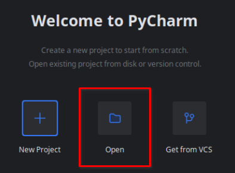
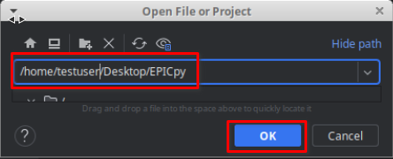
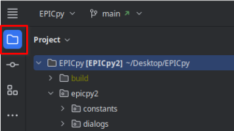
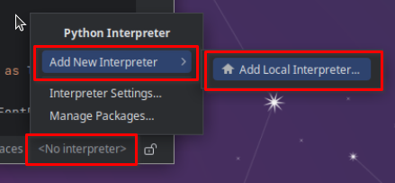
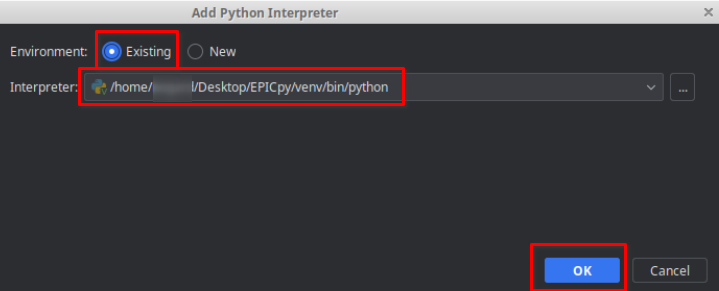
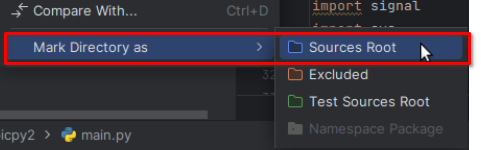
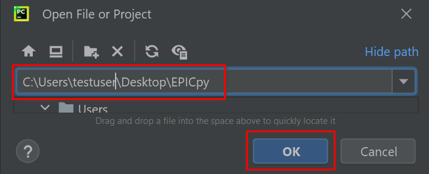
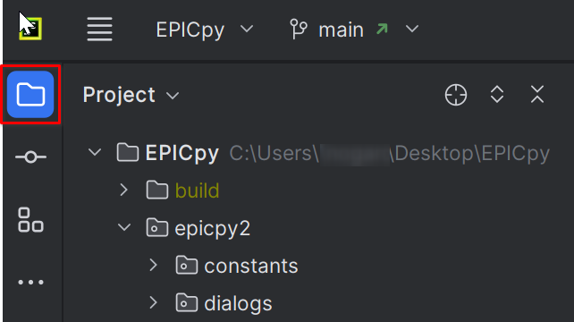

EPICpy Development
Overview
EPICpy is developed using the following technologies:
Require Python Versions
Version 3.9.16 on Windows Version 3.10.11 on Linux and MacOS
Why these versions? The upper limit is 3.10 because some modules we use are not currently rewritten for Python 3.11 or are not sufficiently stable. When this changes, the version will be switched to 3.11 on MacOS and Linux. On Windows, the supported Python version is 3.9 because AFAIK, Microsoft Visual Studio 2019 built in Python (required at the moment to build EPICLib with PyBind11) is limited to 3.9. Our goal is to switch to the latest version of MSVS shortly which may support Python 3.10 and allow EPICpy to run with Python 3.10 on Windows.
Key Packages
- PyBind11 (pybind11): Library for generating Python bindings for existing C++ code. We are currently using this to produce a Python3.9 compatible library of EPIClib for Windows and a Python3.10 compatible library for MacOS and Linux.
- PySide2 GUI Framework (pyside2): Used to build the Graphical User Interface. Note: We are momentarily using PyQt5 instead of PySide2, but this will change shortly and allow for an overall more permissive license for EPICpy.
- Pingouin Stats System (pingouin): Meta-package providing access variety of statistical and graphing packages.
- PipX (pipx): Allows easy cross-platform distributing Python applications.
Setup Dev Environment
Linux
Tested on these Linux Variants
- [x] Debian-based Linux variants (e.g., Ubuntu, Mint, PopOS, etc.)
- [ ] Redhat-based Linux variants (e.g., Redhat, Fedora, Centos, etc.)
- [ ] Arch-based Linux variants (e.g., ArchLinux, Manjaro, EndeavourOS, etc.)
Tested on these Linux Versions:
- [x] 18.04
- [x] 20.04
- [x] 22.04
Most recent Linux distributions come with Python 3 already installed, so you probably already have Python. However, you will need to make sure you build your virtual environment using Python 3.10. In particular, adjust the path of the python3 -m venv venv command below so that it points to the correct version of Python (or use your own method to create the proper virtual environment)..
Install Prerequisites
If you haven't already installed them, then you already have these), you should install the following:
sudo apt install build-essential libssl-dev libffi-dev libncurses5-dev zlib1g zlib1g-dev libreadline-dev libbz2-dev libsqlite3-dev make gcc curl git
You will also need to install the PyQt5 Development files:
sudo apt install qtbase5-dev
Retrieve Source Files from GitHub
# note: this will create the EPICpy source folder in the directory from which you type these commands:
git clone https://github.com/travisseymour/EPICpy.git
cd EPICpy
Set Up A Virtual Environment
NOTE: this section assumes you already have Python 3.10 on your machine and know the path or command required to start it.
Set up a Virtual Environment Using Python 3.10
Create the virtual environment
cd EPICpy
# vvv replace with path to your copy of Python 3.10
~/.pyenv/versions/3.10.11/bin/python3 -m venv venv
Activate the virtual environment
source venv/bin/activate
Check it
python -V
This should report Python 3.10.x
Install Dependencies
Activate the virtual environment
source venv/bin/activate
Update Python package manager
# update pip and wheel
pip install -U pip wheel
Install the EPICpy Python requirements
# install EPICpy requirements
pip install -r requirements.txt
Setup EPICpy in Your Python IDE
The following assumes you are following along with the PyCharm Integrated Python Development Environment. For others (e.g., VSCode, Sublime, etc.) should modify the instructions accordingly.
Obtain PyCharm's Free Community Edition IDE
# If you like using Canonical's proprietary Snap Linux app installer
# To install snap https://itsfoss.com/install-snap-linux/
sudo snap install pycharm-community --classic
# If you like to live the FOSS way using the Flatpak Linux app installer
# To install flatpak https://itsfoss.com/flatpak-guide/
flatpak install com.jetbrains.PyCharm-Community
Start PyCharm
Open The EPICpy folder as a new PyCharm Project
 
Open The File Viewer

Set Up The Interpreter
Click on the \<NoInterpreter> button in the bottom right of the IDE, choose AddNewInterpreter, then AddLocalInterpreter:

Choose Existing, make sure the Location field contains the path to the Python 3.10 virtual environment (venv folder) you created earlier and press OK:

Set The Sources Root
Set the Sources Root by right-clicking on the epicpy folder and choosing MarkDirectoryAs-->SourcesRoot.

Run EPICpy
Finally, right-click the file main.py and choose Run main
If all goes well, you should be looking at the EPICpy GUI.
MacOS
Tested on these Apple Chipsets:
- [x] Intel
- [ ] M1
- [ ] M2
Tested on these MacOS Versions:
- [x] 10.15 Catalina
- [ ] 11 Big Sur
- [ ] 12 Monterey
Most recent MacOS distributions come with Python 3 already installed, so you probably already have Python. However, you will need to make sure you build your virtual environment below using Python 3.10. In particular, adjust the path of the python3 -m venv venv command below so that it points to the correct version of Python (or use your own method to create the proper virtual environment).
Install Prerequisites
You will need to install the XCode commandline build utilities. A super easy way to do this is to just install the Homebrew package manager. You may have already done this, if not see this website (https://brew.sh/). Another approach is to install XCode (it's a 10GB download, and you'll need an additional 10GB of space to install it) from the Apple Store and then use XCode to install the commandline utilities. This is challenging if you don't have the latest version of MacOS, as the version of XCode in the Apple Store may not be installable. Generally, I strongly recommend installing Homebrew(https://brew.sh/); not only does it install the build tools you need, but it's much faster than installing XCode, will install on any version of MacOS. Besides, having Homebrew is super useful anyway. If you already have XCode installed, you may be good to go.
Retrieve Source Files from GitHub
# note: this will create the EPICpy source folder in the directory from which you type these commands:
git clone https://github.com/travisseymour/EPICpy.git
cd EPICpy
Set Up A Virtual Environment
NOTE: this section assumes you already have Python 3.10 on your machine and know the path or command required to start it.
Set up a Virtual Environment Using Python 3.10
Create the virtual environment
cd EPICpy
# vvv replace with path to your copy of Python 3.10
~/.pyenv/versions/3.10.11/bin/python3 -m venv
Activate the virtual environment
source venv/bin/activate
Check it
python -V
This should report Python 3.10.x
Install Dependencies
Activate the virtual environment
source venv/bin/activate
Update Python package manager
# update pip and wheel
pip install -U pip wheel
Install the EPICpy Python requirements
# install EPICpy requirements
pip install -r requirements.txt
# If you have an fbs pro install command, run that now. It can also be upgraded later if you purchased fbs pro (optional).
Setup EPICpy in Your Python IDE
The following assumes you are following along with the PyCharm Integrated Python Development Environment. For others (e.g., VSCode, Sublime, etc.) should modify the instructions accordingly.
Obtain PyCharm's Free Community Edition IDE
brew install --cask pycharm-ce
Start PyCharm
Open The EPICpy folder as a new PyCharm Project
Open The File Viewer
Set Up The Python Interpreter
Click on the \<NoInterpreter> button in the bottom right of the IDE, choose AddNewInterpreter, then AddLocalInterpreter:
Choose Existing, make sure the Location field contains the path to the Python 3.10 virtual environment (venv folder) you created earlier and press OK:
Set Sources Root
Set the Sources Root by right-clicking on the epicpy folder and choosing MarkDirectoryAs-->SourcesRoot.
Run EPICpy
Finally, right-click the file main.py and choose Run main
If all goes well, you should be looking at the EPICpy GUI.
Windows
Tested on these Windows Versions:
- [x] 10
- [ ] 11
Although Windows doesn't ship with Python 3 already installed, you may have previously installed Python. However, you will need to make sure you build your virtual environment below using Python 3.9. In particular, adjust the path of the python3 -m venv venv command below so that it points to the correct version of Python (or use your own method to create the proper virtual environment).
Install Prerequisites
Windows doesn't come with git installed. You will need git to obtain the EPICpy files from the software repository on GitHub.com. You can install git by using an installer from this website (https://git-scm.com/downloads)
Retrieve Files from GitHub
# note: this will create the EPICpy source folder in the directory from which you type these commands:
git clone https://github.com/travisseymour/EPICpy.git
cd EPICpy
Set Up A Virtual Environment
NOTE: this section assumes you already have Python 3.10 on your machine and know the path or command required to start it. If not, install uv and then un uv python install 3.10
Set up a Virtual Environment Using Python 3.10
Create the virtual environment
cd EPICpy
# vvv replace with path to your copy of Python 3.10
C:\Users\testuser\.pyenv\pyenv-win\versions\3.9.13\python.exe -m venv venv
Activate the virtual environment
venv/Scripts/activate
Check it
python -V
This should report Python 3.9.x
Install Dependencies
Activate the virtual environment
source venv/bin/activate
Update Python package manager
# update pip and wheel
pip install -U pip wheel
Install the EPICpy Python requirements
# install EPICpy requirements
pip install -r requirements.txt
Setup EPICpy in Your Python IDE
The following assumes you are following along with the PyCharm Integrated Python Development Environment. For others (e.g., VSCode, Sublime, etc.) should modify the instructions accordingly.
Obtain PyCharm's Free Community Edition IDE
Go to the JetBrains website, scroll down and see the instructions for PyCharm Community Edition: https://www.jetbrains.com/pycharm/download/
Start PyCharm
Open The EPICpy folder as a new PyCharm Project

Open The File Viewer

Setup UP Python Interpreter
Click on the \<NoInterpreter> button in the bottom right of the IDE, choose AddNewInterpreter, then AddLocalInterpreter:
If instead of \<NoInterpreter> it says "Python3.9(EPICpy)" then PyCharm has already found and correctly installed your virtual environment! Otherwise, continue setting up the interpreter:
Choose Existing, make sure the Location field contains the path to the Python 3.10 virtual environment (venv folder) you created earlier and press OK:
Set Sources Root
Set the Sources Root by right-clicking on the epicpy folder and choosing MarkDirectoryAs-->SourcesRoot.
Run EPICpy
Finally, right-click the file main.py and choose Run main
If all goes well, you should be looking at the EPICpy GUI.